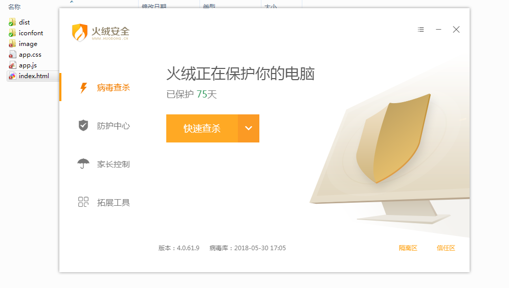

如果你可以建一个网站，你就可以建一个桌面应用程序
Electron 是一个使用 JavaScript, HTML 和 CSS 等 Web 技术创建原生程序的框架，它负责比较难搞的部分，你只需把精力放在你的应用的核心上即可
安装
Electron是基于Nodejs的，Nodejs的安装就不说了
npm install -g electron
# 安装打包工具
npm install -g electron-packager
基本使用
-
创建package.json,没有模板的话可以使用
npm init -
在package.json中main指定的js文件，也就是electron主进程进行初始化
-
看看api，主进程能使用那些，渲染进程能使用拿下，都有什么可以使用的属性，方法
-
由于使用Nodejs，一些模块会无法导出到windows，比如jQuery，使用Nodejs规范的require即可
-
打包的使用
如下命令会在./release下生成outDirName-win32-x64文件夹
electron-packager . outDirName --out=release --platform=win32 --arch=x64 --version=1.0.0 --electron-version=1.8.4 --overwrite --prune=true --icon=./resource/glee.ico --ignore=temp/ -
了解以上基本就可以了
隐藏Frame
关于外部窗口的隐藏有些要注意的地方
-
有Frame的时候
使用的是系统的Frame->webview
-
无Frame
默认会有一个白色的底层，如果设置了transparent: true就是透明了
注意当底层透明时，页面刷新时，直接看到桌面了，会闪烁影响体验
窗口通讯
electron中，从package.json的main载入的js文件就是主进程，由主进程load出来的页面就是渲染进程
渲染进程可以有多个，主进程只有一个”main.js”
主进程和渲染进程之间通信，可以使用ipcMain(主进程)和ipcRenderer(渲染进程)来通信，也可以使用remote模块来通信
所以最常见的就是主进程做中转来实现多个窗口之间的通信
一个案例
demo地址 TMaize/electron-usage
# 调试
npm run start
# 打包
npm run package-win
# 需要注意的是通过require来引入依赖，使用ipcRenderer来进行通讯
window.$ = window.jQuery = require("./dist/jquery.min");
window.ipc = require('electron').ipcRenderer;
